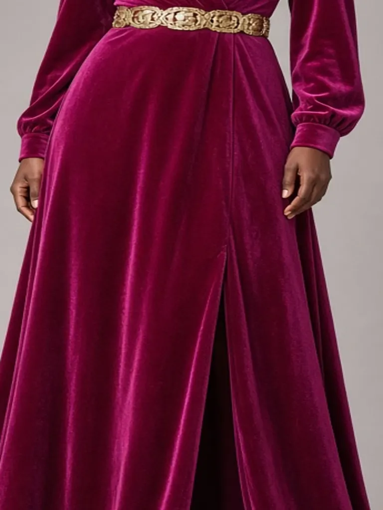
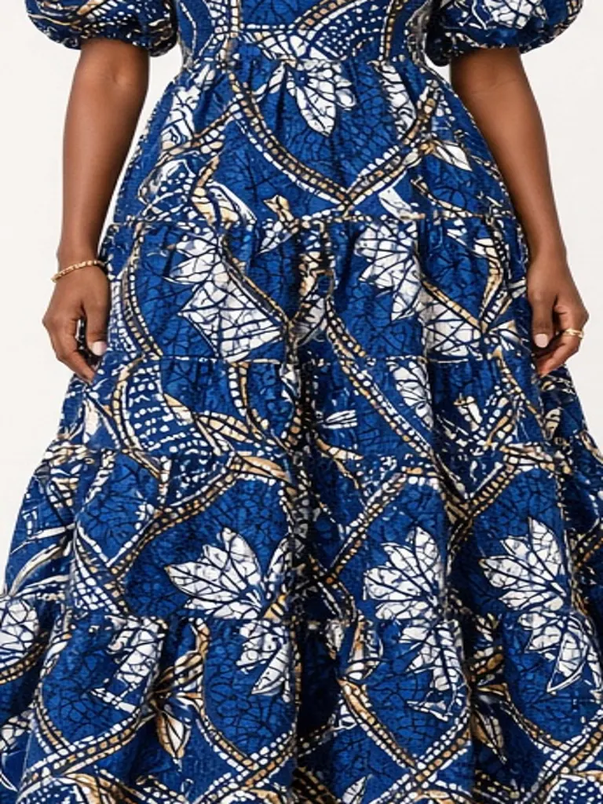

Our story
SN Stitches began with one Singer machine, a stack of wax-print offcuts and a promise: dresses that fit Ghanaian women properly, made by Ghanaian hands.

 Est. Accra
Est. AccraThe atelier process

Our designer starts every collection in pencil — silhouettes inspired by Accra's street style and our grandmothers' kaba.

Wax prints from Makola, kente-woven strips from Bonwire, satins and velvets for the evening edit.

Patterns graded XS–XXL or drafted to your measurements, then sewn and finished by hand.

Steamed, tissue-wrapped with a hand-written note and sent same-day across Accra.
Every seam is a signature. We want you to feel the hands that made your dress.
— Founder, SN Stitches